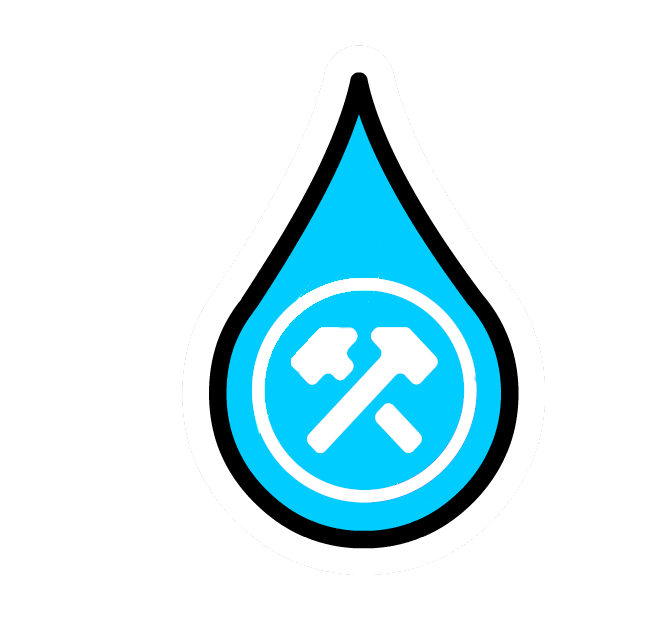
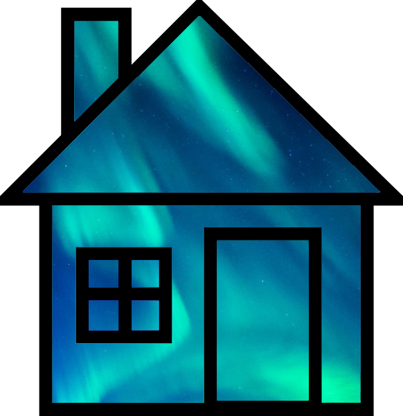

Spiral is a program that allows users to take notes in a
format similar to a spiral notebook. Unlike traditional word
processors and text editors that are configured in a way that
makes it difficult to document things in a non-linear fashion,
Spiral pages allow users to click anywhere to start typing and
easily move elements of their page around the screen.
Additionally, all Spiral content is stored in plain HTML files,
making it easy for users to view, edit, and export their content
from outside of Spiral if you wish.
Spiral is available for download at the project page below! If you have any comments, questions, suggestions, or bug reports, please feel free to reach out through the GitLab issues page and I will address it as soon as I can.
Equle (2024)
Equle is a daily game inspired by my habit of trying to make equations out of strings of numbers I see out in the wild.
Each day at 12 AM UTC, 10 new numbers are randomly generated, and the player's goal is to create the longest, most interesting, and
highest value equation they can with those numbers.
Critics are raving!
"this is really cool mitchell"
"My homie invented the one game he can win at"
"mitchell this is trash (gotta keep you humble)"
Aurora v4 (2018 - 2022)
Aurora v4 is the latest version of the Aurora Interpreter
that I built starting in early 2017. Unlike versions
1-3 of the Aurora interpreter, the primary focus of v4 was
allowing Aurora to generate completely dynamic responses from
the source material she was provided in order to simulate how
real people talk in conversation. Like older versions of the
Aurora Interpreter, the v4 interpreter is not limited to any one
platform. The majority of the source material Aurora's
language skills are built on has been provided by my own
personal group chat with a few friends, and over the past 5 years,
Aurora has picked up on how we speak and has generated numerous
realistic (and often comical) responses to our conversations.
If you would like to see a demonstration of Aurora v4, feel free to click the link below.
If you still want more info on how Aurora v4 works, you can
watch the more in-depth video I made on Aurora's backend, which is
linked in the description of the demo video below.
LandmARk (2017 - 2022)
LandmARk is an augmented reality app that allows you to view
and place virtual artwork in different locations around the
world. By using a combination of augmented reality and GPS
technology, LandmARk allows users to interact with the world
around them by drawing their own artwork on landmarks. Leave
your signature on a watertower, draw a hat on a statue, plant a
virtual flag in your yard, or just see what other users have
created. With LandmARk, the world is your canvas!
LandmARk development was discontinued on May 8th, 2022. However, LandmARk will remain available for use by existing users. Read more here.
Projects that are too unconventional to categorize
Bass as a Service (2024)
The tech industry has made many life-changing, world-shifting innovations in my lifetime - but it is also known
for a considerable number of inventions that nobody has ever asked for or needed. The past 15 years have also seen
far more applications adopt a service model even when such a model is totally unnecessary and consumer-unfriendly
for the product at hand. One day, for no good reason, I thought of something that I found absolutely hilarious and
sent it to my friend:
"OK hear me out: We get n big mouth billy bass, mount all of them to a wall somewhere, get cameras on all of them. Then, we build an enterprise bass management solution that lets us sell access to fish using an hourly pricing model similar to VPS compute pricing models. Users can dynamically scale their bass allocation, etc. All of their connected bass are accessible through a web portal where they can submit whatever jobs they want to the bass (which, in addition to being able to speak whatever they want, are also just fully functional computers that can run arbitrary jobs, optionally sending their command line output to the mouth to be read)
Nobody has even THOUGHT of migrating away from on-prem bass before but it'd be so cost effective"
This *should* have remained nothing more than a one-off joke in my DMs, but because I am an engineer and can't help myself, it did not:
Frisbee Dog VR is a virtual reality frisbee dog game for the Oculus Quest I made with my friend Reece Jones for our VR/AR course at Purdue University. In this game,
the player is given a frisbee that they need to throw into a dynamically positioned target for their dog to catch. The style of our game is inspired by other frisbee dog video games I played as a kid. To make our game more
challenging than other frisbee dog games, we made sure that the user has full range and control over their disc trajectory in a way that more accurately approximates real-world flying disc movement. This means the user has to
ensure that the disc arrives in the target at the right time so the dog is able to catch it, as opposed to having the disc's final position as the only determiner of success. Currently, Frisbee Dog VR is more of a prototype
than a full game, but we may consider adding more stages/objectives and releasing it as a complete game if there is public interest.
Special thanks to my dog, Tyson for inspiring this idea and eagerly helping me with "field research" for this project.
Late to the Stage is my group's project for CS 307 (Software Engineering I) at Purdue University. Late to the Stage is an arena-style multiplayer game where users can select from a variety of avatars and
vehicles that they can pit against each other in a series of fast-paced minigames. Every match in Late to the Stage consists of (in no particular order) a battle royale round, a racing round, a demolition
derby round, and a round of "Confusing Captcha," a fun gamemode we added to make sure you aren't a robot. Although all of us had some level of involvement in every aspect of the development process, the
parts I focused the most on were the base game mechanics for Confusing Captcha and Demolition Derby, *many* bug fixes, captcha question design, and map design. This project would not have been
possible without my groupmates: Parker Lawrence, Lenny Meng, Evan Dunning, Chen Kai Chaung, and William Newton. After the course ended, my group and I decided to open-source our game's codebase in the hope
that it might help other game developers who want to familiarize themselves with the Godot engine.
You can try Late to the Stage now by downloading it from the project page below!
Water You Using (2020)
Water You Using is my group's project for BoilerMake VII at Purdue University that provides users with the ability to precisely and effectively analyze their water consumption trends over time. Water You Using uses a network of custom-programmed water sensors that can be integrated directly into a building's water conduits to accurately measure the water usage of any of its faucets, showers, toilets, and other fixtures over time. Through our robust web application, users can learn more about which of their fixtures use the most water and when their peak water-usage times are - two very useful resources in determining how to save water. I was responsible for developing the backend and managing how data would be stored, queried, and returned to the users and the sensor network. This project wouldn't have been possible without my teammates: Levi, who developed the entire sensor assembly, and Sabrina and Kai, who both developed the entire frontend.
Water You Using was also selected for the "Best Water Conservation Hack" award by EcoLab.

MIDI Augmentation Program (2020)
This semester, as a part of my main programming course at
Purdue, CS 240, our final assignment was a multi-week long
project that consisted of writing a full MIDI file manipulation
program complete with a parser, augmenter, and library in C
using GTK for the UI. Through my program, users can load in a
directory as a midi "library" and select any of the loaded midi
files from the sidebar to alter. Once a file is selected, the
user can manipulate the file in various different ways, such as
by changing the tempo, pitch, or instrument mapping of the
loaded song. Unfortunately, I cannot share the binary or source
for this program since the CS department has instructed us not
to do so, but you can click to the right to see a screenshot of
what my program looks like when running or click the button
below to listen to a few of the augmented songs I generated
through the program that I though sounded interesting enough to
warrant saving.
Lockdown Manager is a school safety app designed to improve
communication among students and faculty members in the event of
a hostile intruder. With Lockdown Manager, students can initiate
a lockdown by simply pressing a button in the app, which sends
out a notification to every registered phone in the district
that will not stop vibrating until acknowledged directly by the
user, ideally allowing the students and staff to be alerted
faster than traditional methods. Furthermore, authorized staff
members can also send district-wide update notifications with
info on the intruder's location, possible escape routes, and any
other information that could help improve safety and
communication during a crisis.
Aurora for Android (Current version:
Beta 3.1.6) (2014 - 2015)
Aurora (AUtomated Response On Request Application) is a voice
activation program that aims to simplify use of your Android
device via voice commands. With Aurora, you can perform everyday
activities on your Android device by simply telling Aurora to do
them for you. For example, you could have Aurora email somebody
by simply saying "Aurora, Email Mitchell Augustin," or you could
have her call somebody by saying "Aurora, call Mitchell
Augustin, mobile." Not only does Aurora offer great assistance
to you by performing system tasks on command, but she can also
answer questions on many topics! For example, you could ask
Aurora about the height of Mt. Everest, what the chemical
formula of water is, what the square root of 100 is, and much,
much more. Aurora is also great at finding restaurants based on
your preferences. With help from Yelp, Aurora can find and show
information on many restaurants in your area.
Note: I am no longer actively maintaining Aurora for Android,
so I have removed it from the Google Play Store. However, if
you'd still like to use it, click the "Download Aurora for
Android" button below to sideload the APK. (You will need to
enable installation from unknown sources in Settings -> Security
-> Unknown Sources first)
Aurora for Home Automation (2015 - 2016)
Aurora for Home Automation extends the usability of Aurora by
allowing her to control appliances within your home! With Aurora
for Home Automation, you have access to all of the resources of
Aurora for Android, but you can also control lighting and other
appliances with your voice! Aurora for Home Automation even has
a live camera stream that saves pictures of its view when motion
is detected.
Unfortunately, I do not currently have the resources to
operate some of the serverside software that Aurora Home is
dependent on, so certain features of Aurora Home are not
available to the public.

ScoreBert for Discord (2017 - present)
ScoreBert is a scoreboard for your Discord server that I made
in a few hours. Each member gets 10 points each month to give to other members whenever they do something cool. Compete with your friends to see who will rank highest on the scoreboard!
To use ScoreBert, just click the link below to add it to your
server. Simply send the "!help" command for the full command and
syntax list. If my version of ScoreBert doesn't work for you,
you are welcome to modify the source code below. You can also
host your own instance of ScoreBert by obtaining a bot token,
downloading the linked jar file, and running "java -jar
ScoreBert.jar [token]" with your token. Be aware that ScoreBert
automatically generates a SQL database called scores.db that
will contain all scoreboard information.
Developer Notice:
Discord and all related names, trademarks, and logos are owned
by Discord Inc. | This program was written by Mitchell Augustin and is licensed under the Apache License version 2.0
Spotify Playlist Analyzer
(2017 - present)
A simple graphical analyzer for Spotify playlists that represents the artists of any playlist as a pie chart.
Made in one day
Developer Notice:
Spotify and all related names, trademarks, and logos are owned by Spotify AB | This program was written by Mitchell Augustin and is licensed under the Apache License version 2.0
Sonar (2016 - 2017)
Sonar is a social network that is entirely based on audio.
With Sonar, you can send audio clips directly to other users
with direct messaging, or you can upload them to your wall for
anyone to see. With the mobile app, you can also join a channel
on a certain topic to be connected with a random person with
similar interests.
Unfortunately, I have decided to shut down Sonar. You can read my shutdown announcement below.


{kind=link}